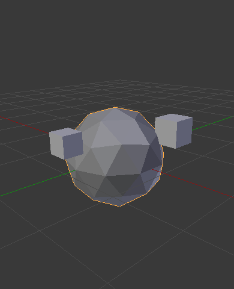
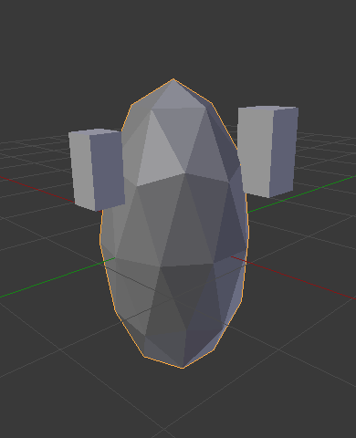

物体父子关系¶
创建父级¶
参考
| 模式: | 物体模式 |
|---|---|
| 菜单: | |
| 快捷键: | Ctrl-P |
当创建复杂的对象，例如一只手表，你可以选择模型的不同部分作为单独的物体创建。但是，最后所有的零件可以互相结合。在这样情况下，你想要指定一个物体为所有物体的父级。移动、 旋转或缩放的父级也会影响子级。
要创建父级（建立父子关系）物体，请至少选择两个物体（首先选择 子物体，然后选择 父物体），然后按 Ctrl-P 。将弹出 设定父级目标 菜单，允许你从几种可能的不同的父子类型中选择一种。选择 设定父级目标 中的一个条目进行确认，并创建父/子关系。
所选的最后一个物体将 活动物体 (如亮橙色表示)，并且还将是 父物体。如果你在选择父物体之前选定的多个物体，如果你在选择父物体之前选择了多个物体，则它们将全部是父物体的子物体，并且将处于层次结构的同一级别（它们是“同级”）。
弹出的 设定父级目标 菜单是上下文相关（语境）的菜单，这意味着它显示的条目数量是根据使用 Ctrl-P 快捷方式时选择的物体不同而不同。
建立父级关系没有 建立非反转的父子关系, 可使用 Shift-Ctrl-P 快捷键代替.
移动、 旋转或缩放父级意味着也同时移动/旋转/缩放的子级物体。然而移动/旋转/缩放的子级不会导致父级的移动/旋转/缩放。换句话说，影响的方向是从父级到子级和而不是子级到父级。
通常，在使用 Ctrl-P 或 创建父级时，子级物体 只能有一个 父级物体。如果一个 子级物体 已经有一个 父级物体 并且你给它另一个父级物体，那么Blender将删除以前的父子关系。
物体的父级¶
物体父级 是Blender支持的最普遍的父子关系形式。如果使最后一个选定物体成为 父级物体，而所有其他选定物体将成为 子级物体。子级物体将继承父级物体的变换。父级物体可以是任何类型。
物体 (保持变换)父级¶
物体 (保持变换)父级 工作方式非常类似于 物体父级。 主要的区别在于 子级物体 是否会记住之前 父级物体 应用于它们的任何先前变换。
由于难于以简单易懂的技术方式来解释，所以使用示例来演示。
假设我们有一个由三个物体组成的场景，它们是名为“空物体A”和“空物体B”的两个空物体，以及一个猴头物体。图 没有父子关系的场景。 显示了三个没有父子关系的物体。

没有父子关系的场景。
如果通过单击 RMB 选择猴头物体，然后 Shift-RMB 单击“空物体A”物体并按下 Ctrl-P 并最终从弹出的 设定父级目标 菜单选择 物体。这将导致“空物体A”物体成为猴头物体的 父级物体 。仅选择“空物体A”旋转/缩放/移动将导致猴头物体也分别跟着被改变。
缩放“空物体A”物体，使猴头变小并向左移动一点。

猴头是“空物体A”的子级物体。
如果你仅通过 RMB 单击方式选择猴头物体，然后 Shift-RMB 单击“空物体B”物体并按下 Ctrl-P 并从弹出的 设定父级目标 菜单选择 物体。这将导致“空物体B”物体成为猴头物体的 父级物体。请注意，当你更改猴头的父级时，猴头的比例发生了变化（变回原来大小）。

猴头是“空物体B”的子级物体。
发生这种情况是因为猴头物体从来没有直接改变其缩放，所以变化是因为它是“空物体A”的子级物体，跟随其缩放发生了变化。由于“空物体B”没有改变其缩放，因此将猴头的父级更改为“空物体B”导致这些间接的缩放变化被移除。
这通常是必需的行为，但是有时如果你更改 父级物体，那么 子级物体 会保留从旧 父级物体 获得的任何先前变换也很有用。相反，如果将猴头的 父级物体 从“空物体A”更改为“空物体B”，我们选择了父子类型 物体（保持变换），那么猴头将保留其从旧父级“空物体A”获取的缩放信息它被分配给新的父级“空物体B”;

物体 (保持变换)父级模式。
如果你想要跟随上面的描述来建立blend文件 可以使用 物体 (保持变换) 建立父子的方法:
骨骼父级¶
骨骼父子关系允许你将骨架上的某些骨骼设为另一个物体的父级物体。这意味着，当变换一个骨架时，子物体只会跟随着特定的骨骼移动。

有四个骨骼的骨架的三个图片。
在图中 有四个骨骼的骨架的三个图片。，第二个骨骼是立方体物体的父级。立方体只有在第一或第二块骨骼的情况下才会变形。注意改变第三和第四根骨头对立方体没有影响。
要使用骨骼父子关系，必须首先选择你希望指向特定父级骨骼的所有子物体，然后 Shift-RMB 选择骨架物体并将其切换到姿势模式，然后 RMB 选择你所需成为父级骨骼的特定骨骼。完成后按 Ctrl-P 并出弹出的设定父级目标菜单中选择骨骼。
现在在姿势模式下变换骨骼会导致子物体也会产生变形。
相对父子关系¶
骨骼相对父子关系是你可以为每个骨骼切换的选项。这和骨骼父子一样，但有一点不同。
如果在骨骼已建立父子关系情况下你将一块骨骼设为子物体的父级，你可以通过选择该骨骼然后切换到编辑模式去移动骨骼；当你切回姿态模式，子物体会在姿态模式中随着该骨骼的位置变化而吸附到新位置。
使用骨骼父子关系具有子级立方体物体的单个骨架骨骼。
在图 使用骨骼父子关系具有子级立方体物体的单个骨架骨骼。 中，第一张图片显示骨骼在编辑模式下移动之前立方体和骨架的位置。第二张照片显示了在编辑模式中选择骨骼后，移动并切换回姿势模式后立方体和骨架的位置。注意，子级物体移动到姿势骨骼的新位置。
骨骼相对父子关系的工作方式侧不同; 如果你在编辑模式下移动父级骨骼，当你切换回姿势模式时，子物体将不会移动到姿势骨骼的新位置。

立方体使用相对父子链接到单一骨骼。
在图 立方体使用相对父子链接到单一骨骼。 中，第一张图片显示骨骼在编辑模式下移动之前立方体和骨架的位置。第二张照片显示了在编辑模式中选择骨骼后，移动并切换回“姿势模式”后立方体和骨架的位置。请注意，子物体不会移动到姿势骨骼的新位置。
顶点父级¶
对于曲线，曲面，网格和晶格类型的物体，可以将其顶点或点用作其他物体的父级。你可以将一个物体父级到一个顶点或一组的三个顶点，这样，当父网格变形时，子级将会随之移动。
来自编辑模式的顶点父级¶
在 物体模式 中，选择子/子级，然后选择父级物体。 Tab 切换到 编辑模式 并在父物体上选择一个定义单个点的顶点，或者选择三个顶点定义一个区域（三个顶点不必形成一个完整的面;它们可以是父物体的任意三个顶点），然后按下 Ctrl-P 并确认。
此时，如果选择了单个顶点，则将从顶点向子/子级绘制关系/父子线。如果选择了三个顶点，则从（父级物体的）三个点的平均中心向子/子级绘制关系/父子线。现在，当父级网格变形并且所选父顶点/顶点移动时，子/子级也将移动。
来自物体模式的顶点父级¶
可以在物体象模式下执行顶点父级，这可以像普通对象父级一样完成。在物体模式中按 Ctrl-P 并选择 顶点 或 顶点(三角形)。
每个物体都会使用最近的顶点，这通常是你想要的。

可以使用设置到父级上下文菜单中的“顶点（三角形）”，将每个小立方体自动父级到棱角球上的三角形附近的顶点。 |

在编辑模式下重新塑造物体，意味着每个立方体都分别跟随其顶点父级变换。 |

在物体模式下重新缩放父级棱角球意味着子级立方体也按预期重新缩放。 |
{kind=link}
{kind=link}
设定父级上下文菜单项意味着用户可以快速设置大量顶点父级关系，并避免单独建立每个父 - 子顶点关系的繁琐工作。
Note
它实际上是一种“反转”的 钩挂 。
选项¶
移动子级¶
通过清除它的原点，你可以将一个子物体 移动 到它的父物体上。父级与子级之间的关系不受影响。选择子物体并按下 Alt-O。通过确认子物体将捕捉到父级的位置。使用 大纲 视图来验证子物体是否仍然是存在父级物体。
清空父级¶
参考
| 模式: | 物体模式 |
|---|---|
| 菜单: | |
| 快捷键: | Alt-P |
你可以通过 Alt-P 方式 删除 父级 - 子级关系。
- 清空父级
- 如果只选择组中的父级，则不做任何事情。如果选择了一个子级或多个子级，他们就会与父级分离，或者被释放，并且他们会返回他们原来的位置，旋转和大小。
- 清除并保持变换结果
从父级那里解散子级，但 保留 父级给他们的位置，旋转和大小。
见 非均匀缩放 这可能适用于这里。
- 清除父级反校正
- 与剔除父子层级关系不同，此选项是从选择的物体中清理掉 建立非反转的父子关系 矩阵。有了这个清空的矩阵，子物体的位置，旋转，缩放属性可以在父物体的世界坐标里表现。